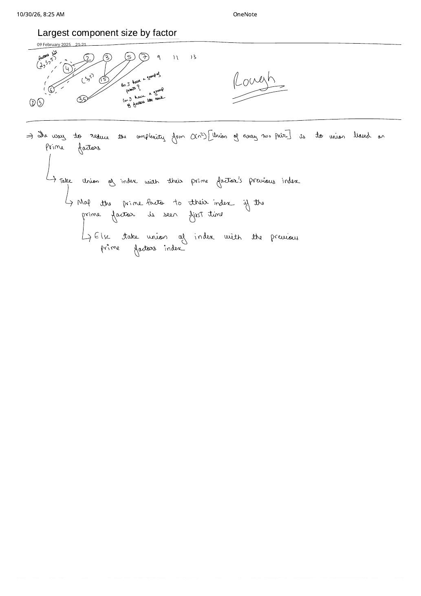

LC 952: Largest Component Size by Common Factor — Prime-to-First-Index Bridge DSU
Expanded from handwritten competitive coding study note: 08_Largest_component_size_by_factor.pdf (dated Feb 9, 2025) · View original handwritten page
1. Problem Statement
You are given an integer array of unique positive integers nums ($1 \le n \le 2 \times 10^4$, $1 \le \text{nums}[i] \le 10^5$). Consider the undirected graph on $n$ nodes where an edge connects $\text{nums}[i]$ and $\text{nums}[j]$ iff $\gcd(\text{nums}[i], \text{nums}[j]) \gt 1$ (they share a common factor greater than $1$). Return the size of the largest connected component in the graph.
2. From the Handwritten "Rough" Brainstorm to the Prime-Bridge Breakthrough
Testing $\gcd(\text{nums}[i], \text{nums}[j]) \gt 1$ across all $\binom{n}{2} \approx 2 \times 10^8$ pairs takes $\mathcal{O}(n^2 \log M)$ time and immediately times out. To break the quadratic barrier, use Euclid's prime divisibility characterization:
Look at the top "Rough" half of 08_Largest_component_size_by_factor.pdf, where the author sketches 4, 6, 15, 35 against primes 2, 3, 5, 7 and writes two candid self-questions in the margin:
- "Can I have a group of parents?" — Since
6is divisible by both2and3, and15is divisible by both3and5, how can a standard tree node (which has only one parent pointer!) belong to multiple factor hubs simultaneously? - "Can I have a group of factors like rank?" — Storing a set of prime factors at every DSU root and merging sets would cost $\mathcal{O}(\# \text{primes})$ per merge, and putting virtual prime nodes directly inside the DSU inflates the domain to $\max(\text{nums}) + 1 = 100{,}001$ while polluting
sz[root]with non-array prime vertices!
The Breakthrough Below the Divider: Index-Only DSU + firstIdxOfPrime Map
Keep DSU strictly over the $n$ array indices $0 \dots n - 1$ (so sz[root] is always the exact count of input integers in that component!), and maintain an external map firstIdxOfPrime[p]:
- Factor $\text{nums}[i]$ into its distinct prime divisors $p$.
- If prime $p$ is seen for the first time, record
firstIdxOfPrime[p] = i. - Otherwise, call
unite(i, firstIdxOfPrime[p])!
Why does a single parent pointer now handle numbers with multiple primes like $6 = 2 \times 3$? Because at $i = 1$ ($\text{nums}[1] = 6$), seeing $p = 2$ unites index $1$ with index $0$ ($4$), and seeing $p = 3$ records firstIdxOfPrime[3] = 1. Later at $i = 2$ ($\text{nums}[2] = 15 = 3 \times 5$), seeing $p = 3$ unites index $2$ with index $1$—which transitively merges $\{0, 1, 2\}$ into one DSU tree!
08_Largest_component_size_by_factor.pdf: Even though $\gcd(4, 35) = 1$, prime bridges $2$, $3$, and $5$ chain indices $0 \leftrightarrow 1 \leftrightarrow 2 \leftrightarrow 3$ into a single component of size $4$.3. Brute $\to$ Trial-Division DSU $\to$ SPF Linear Sieve DSU
| Approach | Time | Space | Verdict & Insight |
|---|---|---|---|
| Pairwise $\gcd(\text{nums}[i], \text{nums}[j])$ | $\mathcal{O}(n^2 \log M)$ | $\mathcal{O}(n)$ | TLE ($\approx 2 \times 10^8$ GCD calls). |
| $\sqrt{x}$ Trial-Division + Prime Bridge DSU | $\mathcal{O}(n \sqrt{M} \cdot \alpha(n))$ | $\mathcal{O}(n + \pi(M))$ | Accepted ($\approx 6 \times 10^6$ inner ops); zero precomputation needed. |
| SPF Sieve + Prime Bridge DSU | $\mathcal{O}(M \log\log M + n \omega(M) \alpha(n))$ | $\mathcal{O}(M + n)$ | Blazing fast ($\le 6$ prime steps per number since $2 \cdot 3 \cdot 5 \cdot 7 \cdot 11 \cdot 13 \cdot 17 = 510{,}510 \gt 10^5$!). |
4. Step-by-Step Dry Run on nums = [20, 50, 9, 63]
Tracing firstIdxOfPrime and sz
• i = 0 (20 = 2² · 5): primes {2, 5} $\to$ first[2] = 0, first[5] = 0. sz = [1, 1, 1, 1], best = 1.•
i = 1 (50 = 2 · 5²): prime 2 $\to$ unite(1, first[2]=0) (sz[0] = 2); prime 5 $\to$ unite(1, first[5]=0) (already same root 0, skipped!). best = 2.•
i = 2 ( 9 = 3² ): prime 3 $\to$ first[3] = 2. best = 2.•
i = 3 (63 = 3² · 7): prime 3 $\to$ unite(3, first[3]=2) (sz[2] = 2); prime 7 $\to$ first[7] = 3. best = 2!
5. Clean C++ Implementations (Trial Division & SPF Sieve)
Below is the zero-precomputation $\mathcal{O}(n\sqrt{M})$ trial-division C++ solution (using a flat array firstIdx of size $M + 1$ initialized to -1 so even prime lookups avoid hash-map overhead!), followed by the SPF-sieve C++ variant:
#include <bits/stdc++.h>
using namespace std;
class Solution {
public:
int largestComponentSize(vector<int>& nums) {
int n = nums.size();
int maxVal = *max_element(nums.begin(), nums.end());
vector<int> parent(n), sz(n, 1);
iota(parent.begin(), parent.end(), 0);
vector<int> firstIdx(maxVal + 1, -1); // Prime -> first array index seen
int best = 1;
auto findPar = [&](auto& self, int x) -> int {
return parent[x] == x ? x : parent[x] = self(self, parent[x]);
};
auto linkPrime = [&](int i, int p) {
if (firstIdx[p] == -1) {
firstIdx[p] = i;
} else {
int pu = findPar(findPar, i);
int pv = findPar(findPar, firstIdx[p]);
if (pu != pv) {
if (sz[pu] < sz[pv]) swap(pu, pv);
parent[pv] = pu;
sz[pu] += sz[pv];
best = max(best, sz[pu]);
}
}
};
for (int i = 0; i < n; ++i) {
int x = nums[i];
for (int d = 2; d * d <= x; ++d) {
if (x % d == 0) {
linkPrime(i, d);
while (x % d == 0) x /= d; // Strip all powers of prime d
}
}
if (x > 1) {
linkPrime(i, x); // Remaining cofactor > 1 is prime!
}
}
return best;
}
};// Variant 2: Precomputed Smallest Prime Factor (SPF) Sieve + Prime-Bridge DSU
class SolutionSPFSieve {
public:
int largestComponentSize(vector<int>& nums) {
int n = nums.size();
int maxVal = *max_element(nums.begin(), nums.end());
vector<int> spf(maxVal + 1);
iota(spf.begin(), spf.end(), 0);
for (int i = 2; i * i <= maxVal; ++i) {
if (spf[i] == i) { // i is prime
for (int mult = i * i; mult <= maxVal; mult += i) {
if (spf[mult] == mult) spf[mult] = i;
}
}
}
vector<int> parent(n), sz(n, 1), firstIdx(maxVal + 1, -1);
iota(parent.begin(), parent.end(), 0);
int best = 1;
auto findPar = [&](int x) {
while (parent[x] != x) {
parent[x] = parent[parent[x]];
x = parent[x];
}
return x;
};
for (int i = 0; i < n; ++i) {
int x = nums[i];
while (x > 1) {
int p = spf[x];
if (firstIdx[p] == -1) {
firstIdx[p] = i;
} else {
int ru = findPar(i), rv = findPar(firstIdx[p]);
if (ru != rv) {
if (sz[ru] < sz[rv]) swap(ru, rv);
parent[rv] = ru;
sz[ru] += sz[rv];
best = max(best, sz[ru]);
}
}
while (x % p == 0) x /= p;
}
}
return best;
}
};6. Complexity Proof & Key Edge Cases
- Time Complexity: Trial division runs in $\mathcal{O}(n\sqrt{M})$ ($\le 2 \times 10^4 \times 316 \approx 6.3 \times 10^6$ operations), while the SPF sieve variant runs in $\mathcal{O}(M \log\log M + n \cdot \omega(M) \cdot \alpha(n))$, where $\omega(M) \le 6$ is the number of distinct prime divisors of any integer $\le 10^5$.
- Space Complexity: $\mathcal{O}(n + M)$ for the $n$-node DSU and prime index table.
- Key Edge Cases:
numscontains1(e.g.,nums = [1]or[1, 2, 3, 5]): $1$ has zero prime factors, so it never callslinkPrimeand stays an isolated singleton of size $1$. Initializingbest = 1returns1accurately!- Forgetting
if (x > 1) linkPrime(i, x);after the $\sqrt{x}$ loop: Without handling the prime cofactor $\gt \sqrt{x}$, primes like $7$ in $14 = 2 \times 7$ or prime numbers like $13$ are silently dropped!
From the Handwritten Notes
View original handwritten page — 08_Largest_component_size_by_factor.pdf (Rough prime graph & first-seen prime index union rule)


08_Largest_component_size_by_factor.pdf (09 February 2025): Top rough trace on 4, 6, 15, 35 exploring multi-factor parent questions, and bottom rule mapping each prime factor to its first-seen index to drop $\mathcal{O}(n^2)$ pairwise union.